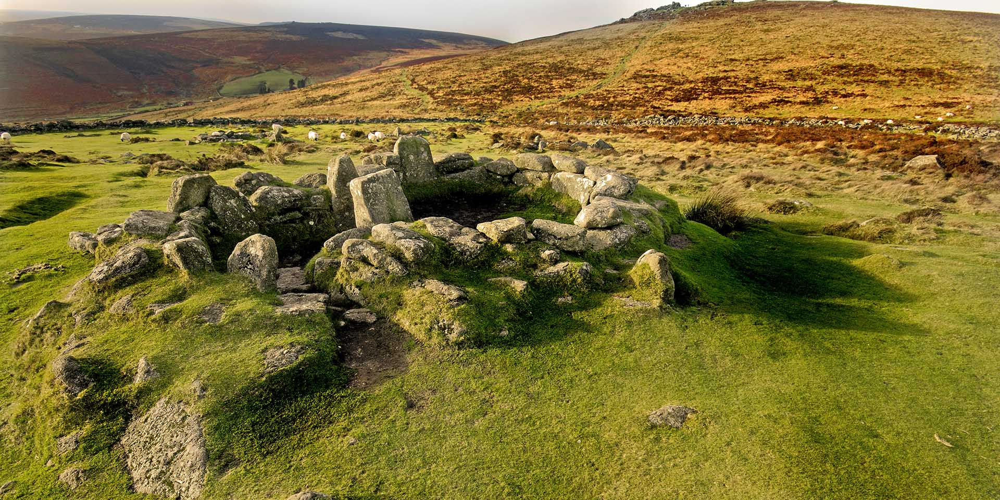
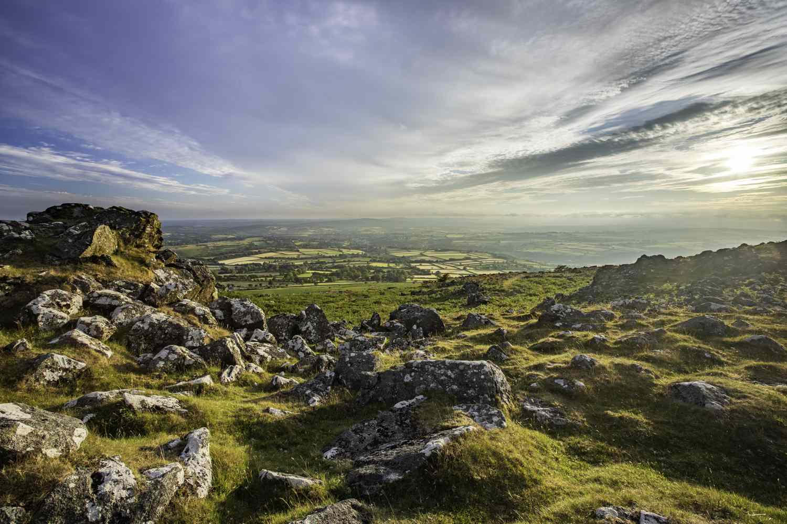
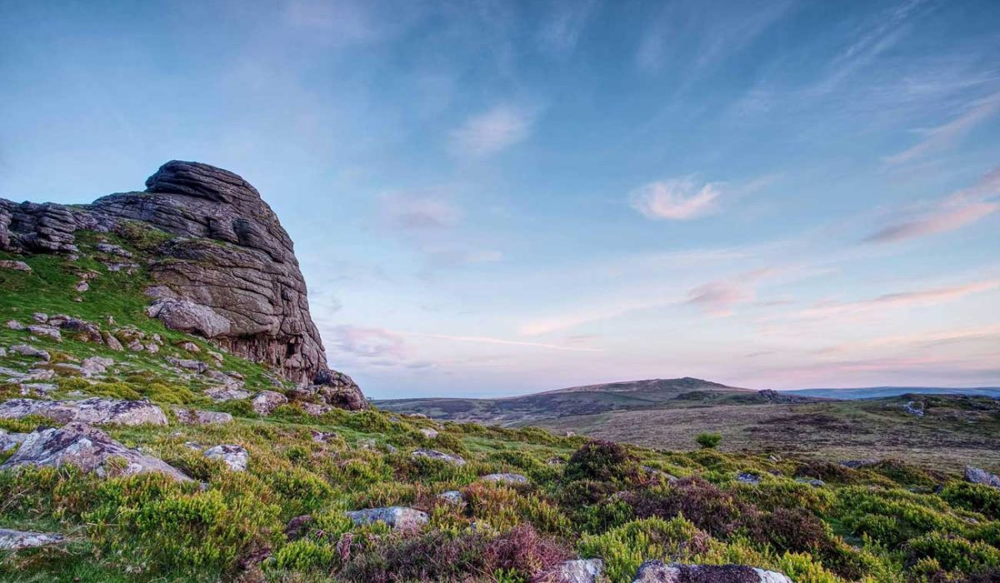
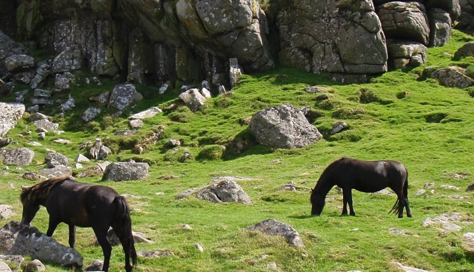
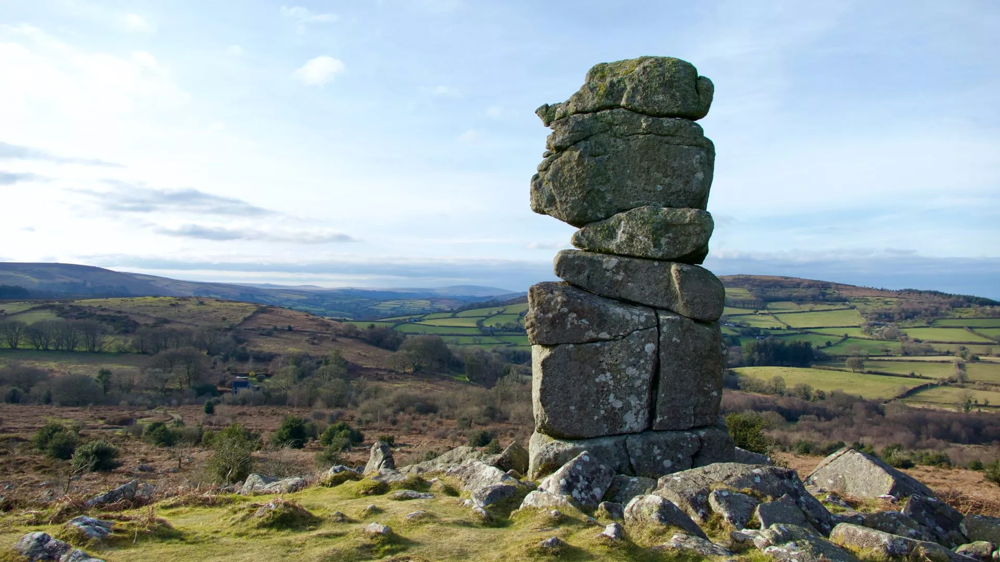
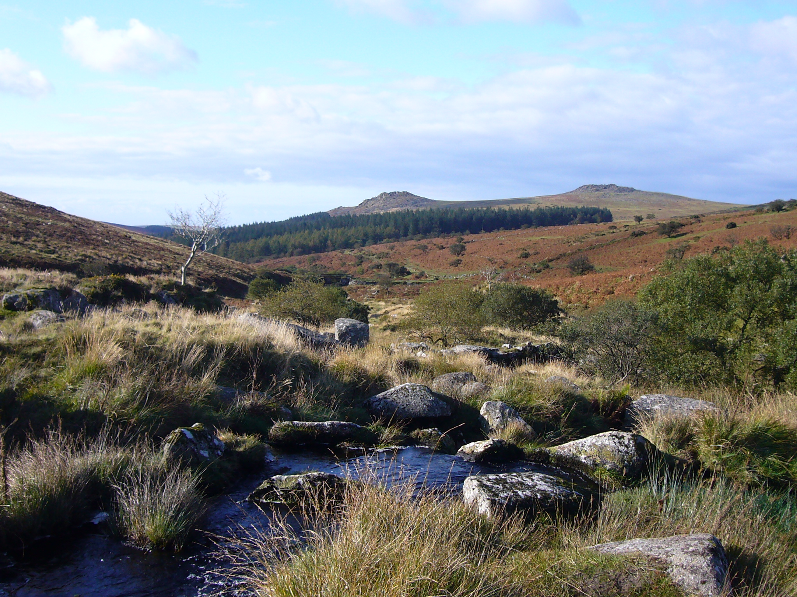
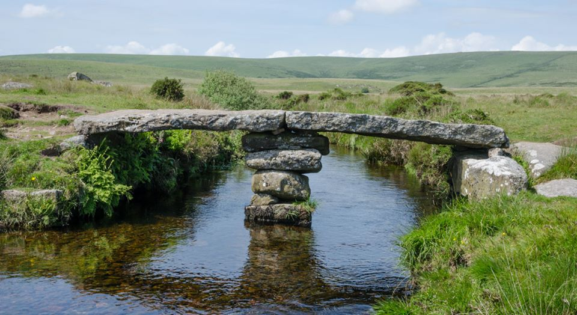

REMEMBERING EARTH TIME
A PRACTICE IN SPIRITUAL ECOLOGY
APRIL 25 - 28, 2024
In the face of our ecological unraveling, time as we know it is rupturing. Around the world, buds bloom
too early, winters don’t quite arrive, and time bends as long-buried carbons emerge to haunt the future.
As we increasingly run out of time, accelerating towards climate catastrophe, how can we free ourselves
from the clutch of the minute hand and embrace the possibilities inherent in every moment?
This April, join us in the ancient and mysterious region of Dartmoor, in Devon, England for a four-day
retreat led by Sufi teacher and Emergence’s founder and executive editor Emmanuel Vaughan-Lee that will
consider how we can attune to a sense of time rooted in the living world.
Expanding upon Emergence’s forthcoming print edition, Vol 5: TIME, this gathering will open participants
to move beyond the time-bound consciousness of control, separation, and linearity we have created, and
towards a different kind of time in which we are attentive to our present moment of ecological crisis
and transformation. Through talks, writing workshops, storytelling, meditation, and nature connection
practices, we will remember the cycles and rhythms of the Earth.
DETAILS
Dates: Thursday, April 25th (check-in between 3-5pm) – Sunday, April 28th, 2024 (departure at 12pm).
Location: Sharpham Trust, Devon, United Kingdom
Fee: £390 – £590, depending on accommodation choice. Fees include everything but travel. Needs-based financial assistance is available for some (see additional details in the expression of interest form).
The retreat is currently full. If you would like to be put on the waiting list, please submit a form expressing your interest to join and we will notify you via email as soon as possible regarding availability.
Please contact events@emergencemagazine.org if you have any questions.
GALLERY






